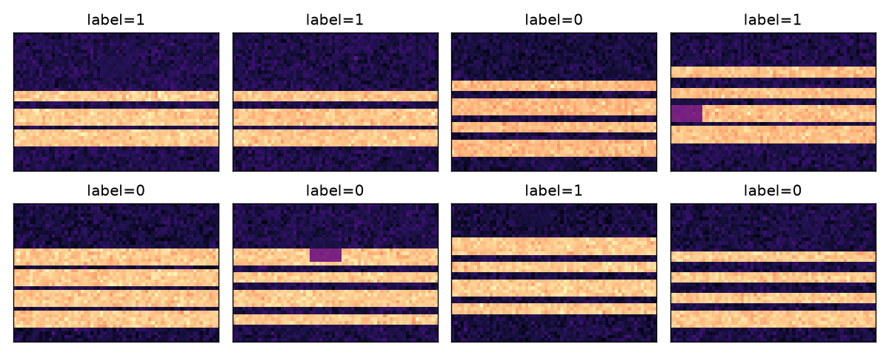

Model Training · 01
模型训练，
到底在做什么？
不推公式，用一条流水线看懂：声音 → 梅尔图 → 小 CNN → 上板
面向 ESP32-S3 墨水屏单词机
Step 1 · 声音变成一张图
先把 2 秒录音，变成 40×64 的梅尔图
横轴是时间，纵轴是频率；颜色越亮，能量越强。模型看的不是波形，而是这张“图”。
→
高频中频低频
40 Mel × 64 帧 · 16 kHz
Step 2 · 打标签
同一张图，标成 正确 或 错误
模型不是“懂英语”，它是在学：这类条纹更像“读对了”，还是更像“读错了”。

玩具梅尔图（仅演示）label = 0 / 1
正确：音素基本准确、重音/节奏可接受
错误：明显替换、吞音、加音或重音错误
真实项目：600 条左右，按说话人独立划分。
Step 3 · 小 CNN
几个小滤波器，在图上找 局部条纹
3×3 的卷积核滑过梅尔图，学“哪里的能量该强、哪里该弱”。模型很小，几千个参数就够。
输入：1×40×64
卷积：8 → 16 → 32 通道
池化：把图缩小，保留主要模式
输出：2 类概率
玩具模型只有 1,330 个参数；真实模型目标 3–8k。
Step 4 · 训练循环
训练 = 猜 → 算错 → 改
每看一批图，模型先给预测；loss 衡量错得多厉害；反向传播把权重往“更对”的方向推一点。
输入40×64 梅尔图
→
预测正确 / 错误
→
loss错得有多厉害
→
更新改一点点权重
0.71 → 0.39
训练 loss 下降（玩具数据）
0.57 → 0.94
验证准确率上升（玩具数据）
15 轮只是玩具演示；真实训练通常几十到上百轮，并且要 early stopping。
Step 5 · 验证
不要随机切样本，要 按说话人切
同一个人出现在训练集和测试集，模型会“认人”而不是“认发音”，准确率会虚高。
测试集 · 2 人
训练时完全没见过；这才是“换人”后的真实水平
Step 6 · 量化 + 上板
把 float32 压成 int8，再交给 TFLM
模型变小、内存变少、推理更快；然后用 ESP32-S3 在本地跑，不依赖网络。
目标：模型几十 KB、推理 <100 ms、arena <64 KB；最终以实测为准。
You don't need the math first
你不需要先手推公式
先跑通 20 条真实录音，再看 loss 和验证集。
数据质量 > 网络结构；按说话人验证 > 随机切样本。
下一步：dataset.py + features.py + train.py